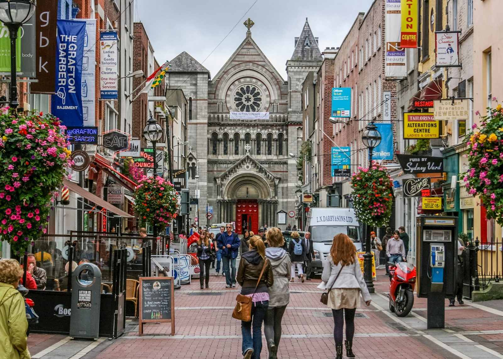
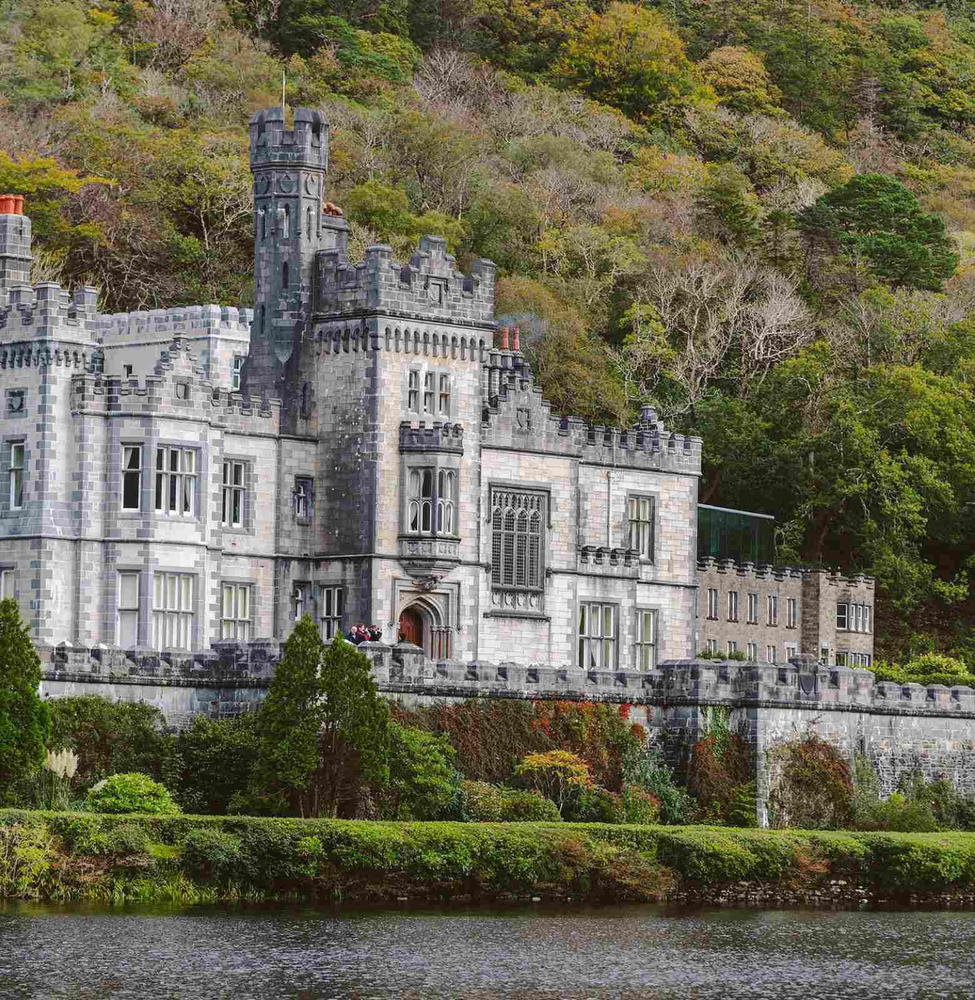
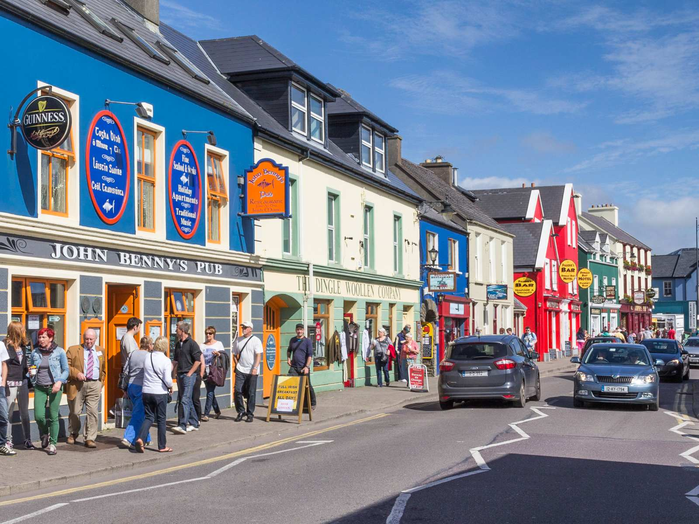
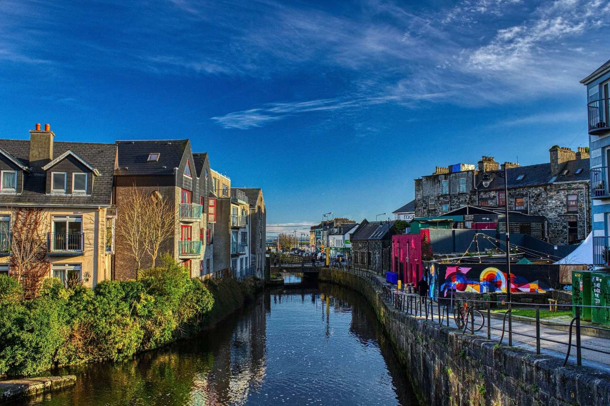
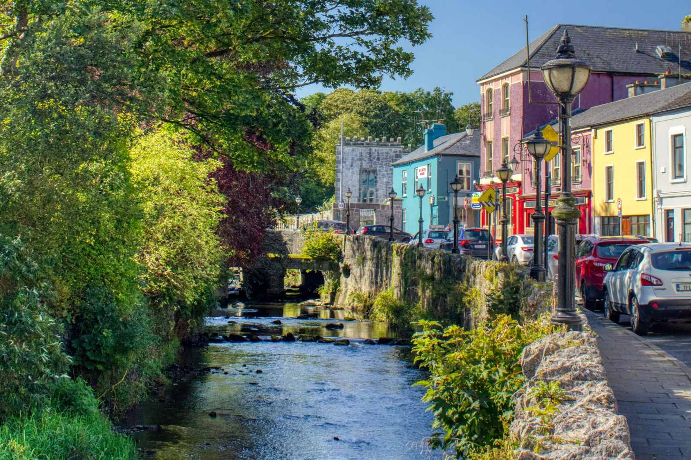

Дублін
Дублін, як відомо, це столиця Ірландії. Це місто відоме своєю дружньою атмосферою: кожен турист почувається, як вдома. До того ж тут велика кількість архітектурних та культурних пам'яток, які нам належить відвідати, ну а вечірнє життя Дубліна - це щоденне бурхливе свято на вулицях міста!

Kylemore Abbey
Kylemore Abbey - одна з найгарніших будівель на всьому острові. Цей замок був резиденцією місцевих монахинь. На сьогодні він приймає численні групи відвідувачів. Окрім самого замку, який походить на ті, що ми бачили у фантастичних фільмах, на території є пречудові сади та велична церква.

Дінгл
Дінгл - це невелике рибацьке містечко, що знаходиться у мальовничому краї на узбережжі океану. Локація справді вражає краєвидами, де ви матимете змогу зробити чудові фото. До того ж в Дінглі знаходиться великий Океанаріум, де можна побачити найрізноманітніших мешканців океанських глибин.

Голвей
Голвей сіті - місто, яке, здається, загубилося серед численних природних пейзажів графства, проте це не так. Голвей є культурним та мистецьким центром Ірландії. Прогулянка вулицями міста порадує око і душу акуратними будівлями та богемною атмосферою.

Лімерік
Лімерік - одне з найбільших міст Ірландії, яке вважається культурним центром. Тут знаходяться музеї, старовинні церкви, площі, галереї мистецтв і, звичайно, замки. Це місто є знахідкою для туриста в Ірландії, бо тут можна і ознайомитися з культурою та мистецтвом, і відвідати страви національної кухні, і здійснити шопінг.
